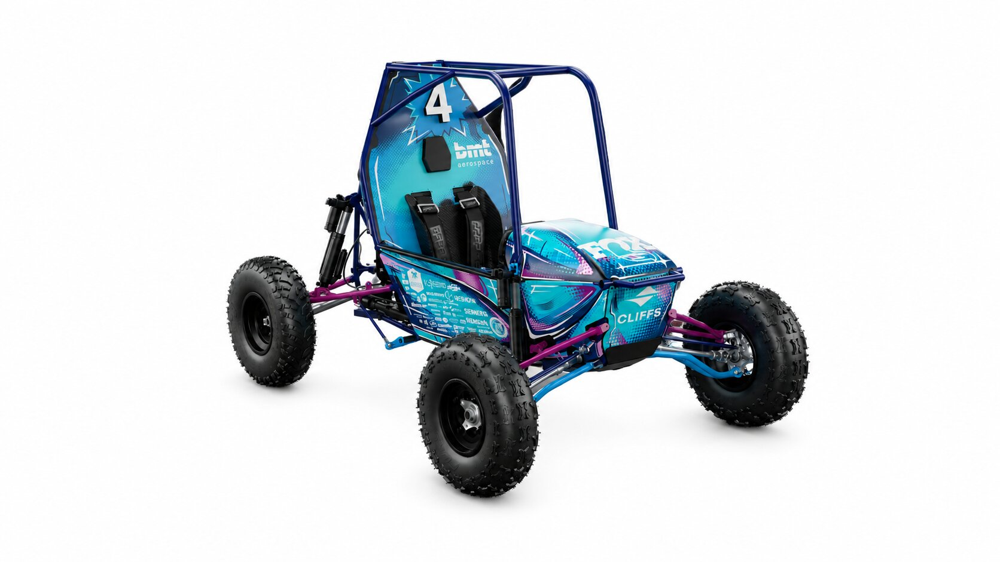

01 / Design context
Optimizing for space
The upright connects the suspension, shafts, and wheel into one tightly packaged system. The project addresses geometry and clearance requirements while balancing stiffness, mass, serviceability, and manufacturability.
